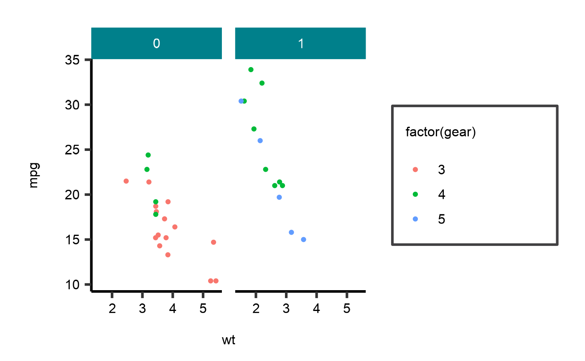
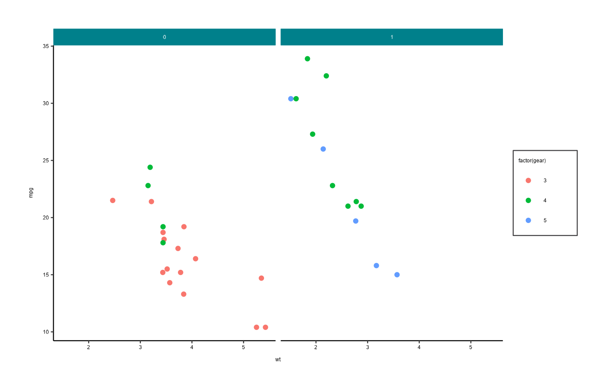
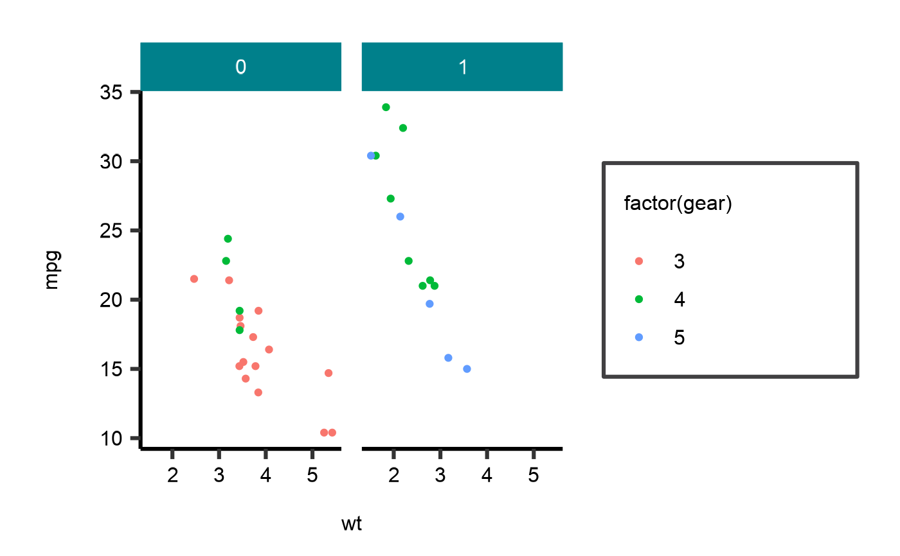
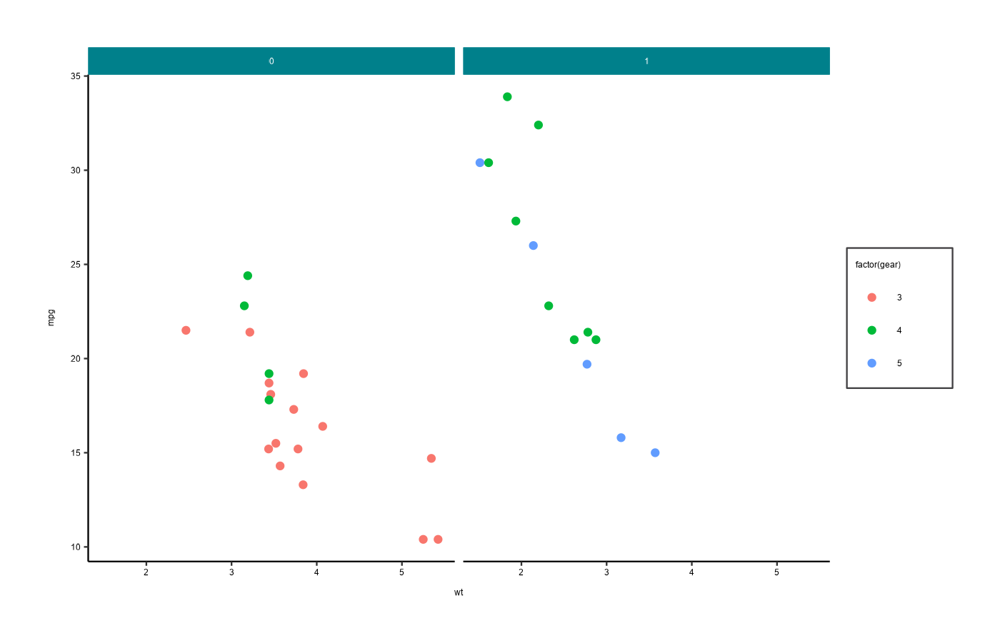
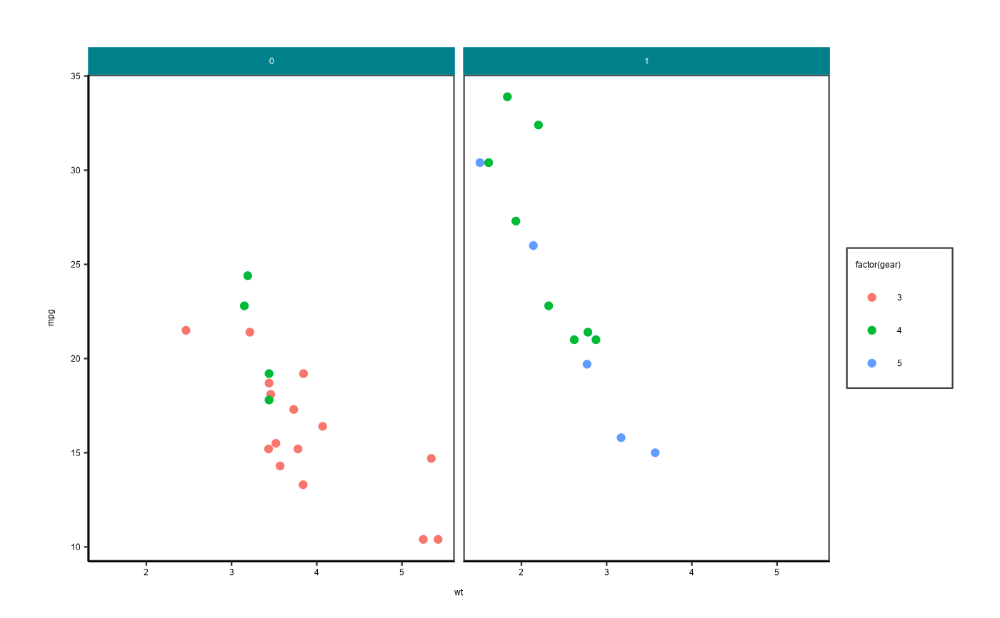
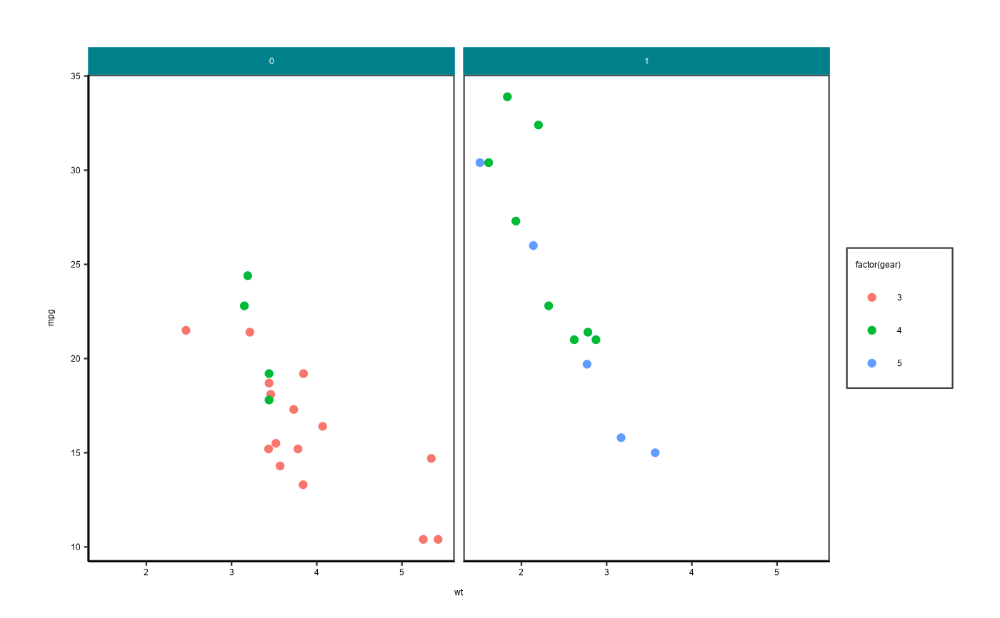

A ggplot2 Theme Using a Unified AAGI Style and Typography for Plots
Source:R/theme_aagi.R
theme_aagi.RdThis theme follows a standard AAGI style including typography guidelines that uses (hopefully) sensible defaults for ggplot2 graphics.
Arguments
- base_size
Numeric. The figure's base size, set to 12 by default. For presentations using a largerbase_sizewill make the fonts larger and more suitable for presentation slides, e.g.,base_size = 24.- major_grid
Boolean. Include major gridlines in the panel. Defaults toFALSEwith major gridlines, including those between facets not included.- minor_grid
Boolean. Include minor gridlines in the panel. Defaults toFALSEwith minor gridlines not included.- border
Boolean. Include a border around the figure on all four sides, i.e., x-axis, y-axis, top and right sides all will have a black border not just x-axis and y-axis. Defaults toFALSEwith only the x-axis and y-axis being outlined in dark grey.- ...
Other arguments as passed along to
ggplot2::theme().
Author
Adam Sparks, adam.sparks@curtin.edu.au
Examples
library("ggplot2")
# Plotting discrete values
p1 <- ggplot(mtcars) +
geom_point(aes(
x = wt,
y = mpg,
colour = factor(gear)
)) +
facet_wrap(~ am)
p1 + theme_aagi()
 # Plotting continuous values
df <- reshape2::melt(outer(1:4, 1:4), varnames = c("X1", "X2"))
p2 <- ggplot(df, aes(X1, X2)) + geom_tile(aes(fill = value)) +
geom_point(aes(size = value))
p2 + theme_aagi()
# Using a larger base size for presentation slides
p1 + theme_aagi(base_size = 24)

# Plotting using minor gridlines
p1 + theme_aagi(minor_gridlines = TRUE)

# Plotting using major gridlines
p1 + theme_aagi(major_gridlines = TRUE)
# Plotting continuous values
df <- reshape2::melt(outer(1:4, 1:4), varnames = c("X1", "X2"))
p2 <- ggplot(df, aes(X1, X2)) + geom_tile(aes(fill = value)) +
geom_point(aes(size = value))
p2 + theme_aagi()
# Using a larger base size for presentation slides
p1 + theme_aagi(base_size = 24)

# Plotting using minor gridlines
p1 + theme_aagi(minor_gridlines = TRUE)

# Plotting using major gridlines
p1 + theme_aagi(major_gridlines = TRUE)
 p1 + theme_aagi(border = TRUE)
p1 + theme_aagi(border = TRUE)
 # Plotting with both gridlines and border
p1 + theme_aagi(minor_gridlines = TRUE,
major_gridlines = TRUE,
border = TRUE)

# Plotting with both gridlines and border
p1 + theme_aagi(minor_gridlines = TRUE,
major_gridlines = TRUE,
border = TRUE)
